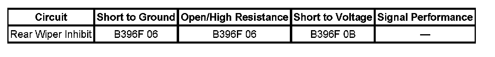

B396F
DTC B396F
DTC DESCRIPTOR
DTC B396F 06
Liftglass Ajar Output Signal Circuit Short to Ground or Open
DTC B396F 0B
Liftglass Ajar Output Signal Circuit Current Above Threshold
DIAGNOSTIC FAULT INFORMATION

Perform the Diagnostic System Check - Vehicle prior to using this diagnostic procedure. Initial Inspection and Diagnostic Overview
CIRCUIT/SYSTEM DESCRIPTION
The liftgate control module provides an output signal to the rear wiper motor for the purpose of disabling wiper motor operation whenever the liftglass or liftgate are open. The liftgate control module receives inputs from the liftglass ajar switch and the sector, ratchet and pawl switches in the latch assembly to determine when an ajar condition exists. The rear wiper inhibit circuit is supplied 12 volts through a resistor and monitored within the wiper motor module. When an ajar condition exists, the liftgate control module drives the rear wiper inhibit circuit low which the wiper motor module determines is an active inhibit signal.
CONDITIONS FOR RUNNING THE DTC
System voltage to the liftgate control module must be 9-16 volts.
CONDITIONS FOR SETTING THE DTC
- The rear wiper inhibit signal is shorted to ground or open.
- The rear wiper inhibit signal is shorted to voltage.
ACTION TAKEN WHEN THE DTC SETS
- When a short to ground condition is present, the rear wiper motor will operate while the liftglass or liftgate are open.
- When an open or short to voltage condition is present, the rear wiper motor will not operate.
CONDITIONS FOR CLEARING THE DTC
- The DTC will be current for as long as the fault is present.
- When the fault is no longer present, the DTC will be a history status code.
CIRCUIT/SYSTEM TESTING
1. Disconnect the liftgate control module connector C1.
2. Ignition ON, using a DMM, verify that battery voltage is present at the rear wiper inhibit circuit terminal in the harness connector.
- If battery voltage is not present, test the rear wiper inhibit circuit for an open or short to ground. If the circuit tests normal, replace the rear wiper motor module.
3. Disconnect the rear wiper motor connector.
4. Ignition ON, using a DMM, verify that voltage is not present at the rear wiper inhibit circuit terminal in the liftgate control module harness connector C1.
- If voltage is present, repair the rear wiper inhibit circuit for a short to voltage.
5. If the circuit tests normal, replace the liftgate control module.
REPAIR INSTRUCTIONS
Perform the Diagnostic Repair Verification after completing the diagnostic procedure.
- Rear Window Wiper Motor Replacement
- Control Module References for liftgate control module replacement, programming and setup. Verification Tests Programming and Relearning